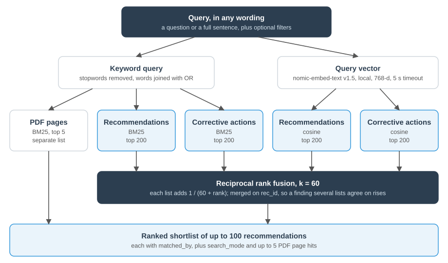

Purpose and boundaries
VA OIG publishes its reports and recommendations at vaoig.gov, with no API or bulk export. This repository turns that public record into a structured dataset and serves it through a read-only JSON API. A separate repository, oig-mcp, wraps the API in goal-level Model Context Protocol (MCP) tools that AI assistants call.
The split is deliberate: this repository owns data, search, and computation, and has no knowledge of any tool. An endpoint that mirrors one tool is treated as logic leaking across the boundary. The contract between the two is a documented API specification.
Technology stack
Versions are what the running service used on November 4, 2026.
| Layer | Technology | Why this choice |
|---|---|---|
| Language and packaging | Python 3.11, uv with a lockfile, hatchling | Dependency resolution ignores releases under two weeks old, with explicit exceptions for security fixes |
| Crawling | httpx 0.28 behind a custom PoliteClient, selectolax 1.0 (Lexbor) | The client enforces site rules in one place, and parsing runs offline over a raw store |
| PDF text | pypdfium2 5.14 (PDFium) | Keeps words whole where pypdf split them, and reads VA's encrypted PDFs. Every document has a text layer, so OCR and layout models add cost and no coverage |
| Structured extraction | Rule-based parsers, versioned per template | Deterministic and testable, with no LLM in the data path |
| Storage | SQLite 3.46 with FTS5 (porter unicode61), forward-only SQL migrations | One portable file that snapshots and checksums cleanly, with no database server |
| Embeddings | Ollama 0.32 running nomic-embed-text:v1.5, 768 dimensions | Local, with no per-query cost and no query text leaving the machine |
| Vector search | NumPy 2.4, exact cosine scan over vectors held in memory | 26,077 vectors do not justify a vector database |
| Rank fusion | Reciprocal rank fusion, k = 60, implemented here | Needs no score calibration, and adds no model or dependency |
| Validation | Pydantic 2.14, pydantic-settings 2.15 | Row checks at ingest, parameters at the API, typed configuration |
| API | FastAPI 0.143 on uvicorn 0.54 | Typed, read-only JSON, with synchronous routes over per-request connections |
| Packaging and runtime | Docker image on python:3.11-slim, non-root user, Compose on OrbStack | One image runs both the pipeline and the API |
| Exposure | cloudflared 2026.10 under launchd, Cloudflare Access service token | Outbound-only tunnel, with no inbound port open |
| Quality | pytest 9.1, ruff 0.17 | Fast offline suite, run locally. There is no CI pipeline |
| Consumer | oig-mcp, a separate MCP server built on FastMCP | Holds the tools, and calls this API over HTTPS |
Deliberately not used: OCR or Docling, a vector database, a cross-encoder reranker, LLM extraction, and a hosted embedding service. Each would add operating cost or nondeterminism without a measured need on this data.
The pipeline
One image runs both the pipeline and the API. oig-data refresh runs these steps in order and stops at the first failure.

Crawling rules
A polite, identified crawler rate-limits itself, backs off on errors, and stays within allowed hosts, stopping a stage after repeated failures rather than pushing through. Everything fetched is saved untouched, so a parsing fix never requires re-crawling OIG, and a failed run resumes where it left off.
Extraction
PDF text comes from PDFium, which keeps words whole where an earlier extractor split them at font changes, and strips repeated headers, footers, and page numbers before anything reaches search. Facility responses, whether a facility agreed, its target date, and its corrective action, are pulled with rule-based parsing, not AI: fully reliable on the current report templates (Healthcare Facility Inspection and CHIP), with partial, best-effort coverage on older formats. Every parsed response is cross-checked against OIG's own listing text, and anything that doesn't agree is dropped and logged rather than trusted.
Data model
SQLite is the system of record, in a single file with forward-only migrations.
| Table | Rows | Key and purpose |
|---|---|---|
reports | 4,415 | One row per listing on OIG's site, so 4,410 distinct reports. Keyed by site path. node_id is nullable, because vaoig.gov exposes it only for reports with recommendations |
recommendations | 15,649 | rec_id = <node_id>-<rec_no> |
status_observations | 31,296 | Append-only, one per recommendation per run, so history accumulates |
report_facets | 17,734 | OIG's own classifications |
pdf_documents, pdf_pages | 2,214, 89,188 | Page text |
rec_responses | 11,264 | Domain, concurrence, target date with precision, corrective action |
standards_cited | 23,627 | Directive, handbook, and regulation citations, at report level |
report_duplicates | 5 | Reports OIG lists twice, each pointing to the listing that is kept |
facilities, report_facilities | 159, 2,332 | Keyed by VA station number. Each link records its method |
inspections | 1,232 | Keyed by report path, because a clean inspection has no node_id. A view gives each facility's latest and its next-window estimate |
clusters, rec_clusters | 283, 2,591 | Recurring recommendations. Each cluster records its method and threshold |
text_embeddings | 26,077 | 768-dimension float32 vectors as BLOBs, with model name and text hash |
Derived data
Facilities. Matched to a VA station number from report memo headers, with central-office routing symbols and role or office names excluded. About 44% of links are inferred from a facility name in the title rather than a station number in the PDF. A short, reviewed correction list fixes the handful of memos with a wrong or parent station, without altering OIG's own text.
Clusters use two methods, because the corpus has two kinds of wording: prefix matching for older templated language, and semantic similarity (cosine ≥ 0.88) for the current inspection program, where wording varies too much for prefix matching to find much. A theme can still split across clusters, so a cluster's report count is a lower bound, not a total.
Next inspection window. Latest inspection plus three years, the HFI program's stated cycle. OIG publishes no schedule, so every response labels this an estimate, and the count starts from the inspection's end date where one exists, or from publication for a clean inspection whose PDF isn't collected.
API
FastAPI on uvicorn. Each request opens its own read-only connection, so a published database takes effect on the next request with no restart. A connection may move between pool threads during a request, but only one thread uses it at a time.
| Endpoints | Purpose | How rows are found |
|---|---|---|
GET /v1/search | Find, in any wording | Hybrid, fused (below) |
GET /v1/recommendations, /v1/reports | Exact, countable lists | SQL filters, optional FTS5 |
GET /v1/reports/{node_id}, /v1/facilities/{station}, /v1/clusters/{id} | Detail | Exact key |
GET /v1/facilities, /v1/clusters, /v1/inspections | Lookups | SQL, LIKE |
GET /v1/pages/search | Narrative text | FTS5 with snippets |
GET /v1/metrics/closure, /v1/metrics/counts | Aggregates | SQL filters, computed in Python |
GET /v1/taxonomy/{facet}, /v1/meta | Reference and freshness | SQL |
GET /health, /health/search | Liveness; whether search runs both halves |
Strict parameters. An unknown query parameter returns 422, naming it and listing what is allowed. A misspelled filter would otherwise be ignored and return unfiltered numbers that look correct. The cost is a version dependency: the MCP server cannot send a new parameter until the API supports it.
Queries. SQL is written ahead of time as fixed pieces and assembled per request. Values are always bound; sort options and table names come from allow-lists. Neither the assistant nor the MCP server writes SQL. That rules out injection and the failure where a model composes a plausible but wrong query. The one exception is q_mode=raw, which passes FTS5 syntax through as a bound value, so it can affect what is matched but not the SQL itself.
Context budget. Lists page at 20 by default and 100 at most. Facility detail returns its 25 newest recommendations by default, because the largest facilities reached 360 KB unpaged. Search returns ranked records, and the assistant writes the answer.
Search

There are no modes to choose, and the MCP server exposes one search tool, so an assistant never guesses between similar tools. Rank fusion needs no score calibration, and a recommendation found through several lists rises. Filters apply to every list. Vectors are cached in memory until the database file changes, then scanned with NumPy, which is adequate at this size.
Finding and counting are separate. Similarity has no natural cutoff, so a count built on it would depend on an arbitrary threshold. total on /v1/search is the shortlist size, not a count of findings. Every endpoint that counts uses exact SQL and rejects similarity, so a query returns the same number each time and can be checked against gold answers.
If the model is down, the semantic lists are empty and the same pipeline runs on keywords. search_mode reports keyword_fallback, and /health/search reports degraded.
Search settings
| Setting | Value |
|---|---|
| Keyword query | Stopwords removed, words joined with OR, ranked by BM25 |
| Embedding input | search_query: and search_document: task prefixes; indexed text capped at 2,000 characters |
| Vectors | Unit-length float32, stored in the database file, so a snapshot carries its exact index |
| Candidates per list | 200 |
| Fusion | Each list adds 1 / (60 + rank) to a recommendation's score |
| Result | A shortlist of up to 100, paged, with matched_by naming the lists that found each item |
| Embedding timeout | 5 seconds, then keyword fallback for that search |
Considered and left out
- Cross-encoder reranker: another service to keep up. It can be added after fusion if the evaluation shows ranking trouble, without changing the tool.
sqlite-vec: a native extension in the container, for no gain at this size.- A larger embedding model (
qwen3-embedding:8b): 35 minutes or more to embed, against about 2, with 19 GB held in memory. Ruled out on operating cost; its quality was not compared. - Embedding PDF pages: chunking and a much larger index, for a narrative search that keywords serve adequately so far.
Data quality
Three layers keep a pipeline that "succeeds" with bad data from going unnoticed.
Reconciliation with OIG. Each build compares itself with what OIG publishes. Totals alone proved misleading: OIG prints 586 open and 15,778 total, against our 567 and 15,649. A row-by-row comparison on November 4 found the same recommendation IDs in both, with none missing either way. The whole difference was blank rows on OIG's pages: 19 in the open view and 129 overall. So validate now compares both the open view and the full list by ID on every build, and any difference fails it. Closure dates were also compared across two independent sources on OIG's site, report pages and /recommendations-all: all 14,223 agreed, and none of the 859 recommendations without a date had one in either. Dates now come from /recommendations-all, so that cross-check will not repeat by itself.
Data gates. Thresholds that catch silent loss, such as a markup change that empties a field. These thresholds are judgment calls, informed by this one build.
| Gate | Value | Threshold |
|---|---|---|
| Closed recommendations with a closure date | 94.3% | 90% |
| Reports with recommendations having a PDF | 99.3% | 90% |
| Reports with recommendations having a summary | 99.9% | 80% |
| Recommendations with a vector | 100% | 99% |
| Corrective actions with a vector | 100% | 99% |
| Reports with a state or VISN | 74.3% | 25% |
Quality checks report without failing: orphan rows, count mismatches, impossible dates, link methods, recommendations missing from the latest listing, office labels not on OIG's list, same-title reports nobody has classified, names shared by two stations, HFI reports with no facility, and page footers in responses. On this build, no recommendations were missing, no labels were unmapped, no same-title pair was unclassified, every HFI report had a facility, and one response held a footer.
Observability
| Signal | Where |
|---|---|
| Request log: path, status, duration | API log |
| Search log: mode, query length, list sizes | API log. Query text is never logged, because a user may describe their own facility |
| Pipeline log, with a warning when a stage ends with problems | Pipeline log |
| Search health and fallback counters since start | GET /health/search |
| Stage counts, anomalies, parse rates, fetch failures | Per-stage run output |
| Rows ingest refused, with reasons | Rejects file |
| Build comparison with OIG | Validation report, and reconciliation in GET /v1/meta |
Logs rotate. No alerting is configured, so a failure is visible only to someone who looks.
Security
- Public data, access-controlled API. All data is public. The token manages load and usage.
- Network. Loopback bind, outbound-only tunnel, and an Access policy allowing only the service token. Unauthenticated requests get
401, verified with no token and with a fake one. - Credentials. The token is held in secret stores and never in a repository.
- Read-only serving. The API opens the database with
mode=ro, with bound parameters throughout. There are no write endpoints. - Crawl boundary. HTTPS on allowed hosts only, on-site redirects only, and a path allow-list for PDFs.
- No rating of facilities. Metrics have no
group_by=facility, and a test enforces that. Facility data is listed, not scored.
Design decisions
| Decision | Trade-off accepted |
|---|---|
| SQLite in one file | One writer, one host; no database server to run |
| Status as append-only observations | More rows, in exchange for history |
| Container on a local machine, not Cloudflare D1 | Availability depends on one Mac |
| Reports keyed by path | A changed slug on a report with no recommendations and no number can duplicate it |
| One hybrid search, with local embeddings | Live semantic search depends on Ollama |
| Rule-based PDF parsing, no LLM extraction | Lower coverage on other report types, in exchange for deterministic, testable output |
| Vectors stored in the database file | A larger file, in exchange for snapshots that carry their exact index |
Testing
Testing has three layers: an automated suite that runs offline, checks against the full build and OIG's live site, and measurements of the running service.
Automated suite
uv run pytest runs 187 test cases offline in about 4 seconds, all passing, and ruff reports no lint errors. Fixtures are saved pages from vaoig.gov and two real PDFs, one HFI and one CHIP.
| Test file | Cases | Covers |
|---|---|---|
test_pipeline.py | 58 | Report page and closure parsing, later-stage ingest, re-ingest by content hash, rejected rows, missing recommendations, office labels, derive, clean inspections, station corrections, duplicate listings, clusters, gates, reconciliation, snapshots, refresh stopping at a failure |
test_api_analytics.py | 37 | Page search, facilities, inspections, clusters, and metrics, including hand-computed medians and quartiles, and duplicate listings counted once |
test_pdf_parsers.py | 36 | Page extraction, footers, split words, and HFI and CHIP parsing against the real PDFs |
test_api_v1.py | 18 | Response contracts for list and detail endpoints, strict parameters, and concurrency |
test_hybrid.py | 14 | Fusion, filters on every list, keyword fallback when the model is down, query text never logged, counting endpoints rejecting similarity |
test_listing_parser.py | 7 | Listing rows, statuses, and text repair |
test_http.py | 7 | Request delay, honest User-Agent, Retry-After, giving up, off-site redirects refused |
test_api.py | 5 | Health and meta, and a republish served with no restart |
test_db.py | 3 | Migrations, foreign keys, read-only publish |
test_ingest.py, test_rawstore.py | 2 | Status history across runs, and raw store de-duplication |
The concurrency test runs a real uvicorn server, because TestClient did not reproduce the bug it guards against. It was confirmed to fail without the fix.
Checks on the full build
| Check | Method | Result |
|---|---|---|
| Recommendations against OIG | Compared every ID with /recommendations-all on every build | Same 15,649 IDs, none missing either way |
| Open recommendations against OIG | Compared by ID on every build | 567 in both |
| Closure dates, two sources | Compared report pages with /recommendations-all, using the production parser | All 14,223 agree |
| Re-ingest is stable | Loaded the full run twice on a copy and compared content hashes | Hash unchanged, 0 rejected rows |
| Rebuild is stable | Reran ingest, index, embed, and derive with no new crawl, including on the PDFium text | Hash unchanged each time, 0 texts re-embedded |
| Extractor swap | Compared every parsed response and memo with the pypdf build | 24 responses gained, none lost, 1 action removed because it had been attached to the wrong recommendation, HFI and CHIP rates held or rose |
| Changed facility links | Read every link added or removed since the previous build, and every recent inspection report with no link | One lost link and two missing links found and fixed, and the rest correct, apart from the limits listed below. Those still unlinked are VISN-level and national reports |
| Estimates that should not move | Compared each facility's latest inspection with the previous build | 118 unchanged, including El Paso at 2028-01-16; 25 changed, each from a newer report now counted or a corrected station |
| Responses attached to the right recommendation | Word agreement between each parsed block and the listing's text | No HFI or CHIP response dropped, 45 others dropped |
| Data gates | Six thresholds on every build | All passed (see Data quality) |
| Overlapping requests | 15 rounds of 60 requests across seven live endpoints | No 500s, dropped connections, or thread errors |
| Access control | Requests through Cloudflare with no token, a fake token, and the real token | 401, 401, 200, run from the host machine |
| Integration | MCP tools called against the live API | Returned real data on this build, and passed the MCP server's authentication checks and evaluation |
Bugs these checks found
Most of the serious defects appeared only on real data or under load, so a passing suite is necessary here but not sufficient.
| Defect | How it surfaced | Fix |
|---|---|---|
| CHIP parsing at 29% | Parse rates on the full corpus | Rebuilt around target-date lines, reaching 95.2% |
| Central-office memos appearing as facilities | Reviewing the facility list | Station numbers below 300 and role names excluded |
| Search taking 900 ms | Timing live queries | Query plan fixed by removing a LEFT JOIN, reaching about 100 ms |
| Reports sharing a PDF lost their text | Full-build coverage | Parse results keyed by URL and node id |
| A data gate computed on the wrong denominator | Reading the validation report | Denominator corrected |
| 500s and dropped connections on overlapping requests | The MCP server's parallel calls | Connections may be closed on another pool thread |
| Re-ingest changed the content hash | Running the check on real data, after the fixture test passed | Surrogate ids left out of the hash |
| Clean inspections missing, so estimates were years early | Checking a gold question in the MCP evaluation | inspections keyed by path, with clean reports included |
| Split words and page footers in responses | An independent test of the MCP tools | PDFium in place of pypdf, and footers removed by pattern |
| Wrong station on report memos, which made Wichita VA Kansas City's latest inspection | Reviewing names shared between stations | Reviewed corrections applied at derive |
| Reparsing left old responses and vectors behind | Reading the ingest code during the extractor swap | A reparse replaces each report's rows, and embed removes vectors whose text is gone |
Measurements
Measured against the running container, excluding the tunnel, which added roughly 150 to 200 ms in earlier checks. These are from the build before the extractor change and were not repeated. The row counts behind them differ by well under 1 percent.
| Request | Requests | Median | Slowest |
|---|---|---|---|
/v1/search, 10 test questions, one at a time | 50 | 125 ms | 181 ms |
/v1/search, 25 at once | 100 | 1,845 ms | 2,747 ms |
/v1/metrics/closure | 30 | 49 ms | 57 ms |
/v1/facilities/{station} | 30 | 9 ms | 10 ms |
/v1/clusters | 30 | 8 ms | 9 ms |
/v1/metrics/counts | 30 | 3 ms | 4 ms |
/v1/recommendations, with a keyword | 30 | 2 ms | 5 ms |
/v1/pages/search | 30 | 2 ms | 3 ms |
/v1/reports/{id} | 30 | 2 ms | 2 ms |
All of these returned 200. Parallel searches queue at about 14 per second on this machine, so latency grows with concurrency. These are small samples, not a sustained load test.
Search relevance test
Compared /v1/search with OIG's /recommendations-all search on 10 plain-language questions, each as a full sentence and as short keywords fixed before any results were read. OIG returned no results for any full sentence. The top 5 recommendations from the other three searches were pooled into 99 distinct results and shuffled. After the text rebuild, this service's searches were run again, and 14 of the 20 returned a different list, because corrective actions were re-embedded from clean text. Recommendation text did not change, so earlier judgments stand, and the 8 new results were judged the same way. OIG's results were not fetched again. Two separate Claude agents judged each result with no project context and no view of which search found it, and a result counted as relevant only if both marked it so. They agreed on 106 of 107, but they are the same model, so that is not independent confirmation. No person judged the results.
Each cell shows relevant results in the top 3, relevant results in the top 5, and results returned.
| Question | This service, sentence | This service, keywords | OIG, keywords |
|---|---|---|---|
| Abnormal biopsy result not communicated | 2 / 4 / 5 | 1 / 3 / 5 | 3 / 5 / 5 |
| Medication carts left unlocked | 3 / 4 / 5 | 2 / 3 / 5 | 0 / 2 / 5 |
| Inpatient walked out of a locked unit | 0 / 1 / 5 | 2 / 2 / 5 | 0 / 0 / 5 |
| Nurses not trained on infusion pumps | 0 / 0 / 5 | 0 / 0 / 5 | 0 / 0 / 0 |
| Practicing after a license lapsed | 1 / 2 / 5 | 1 / 1 / 5 | 1 / 1 / 1 |
| High suicide risk, no follow-up call | 2 / 4 / 5 | 1 / 2 / 5 | 1 / 1 / 1 |
| Expired supplies in sterile storage | 3 / 4 / 5 | 3 / 5 / 5 | 2 / 4 / 5 |
| Fall injury never reported | 0 / 0 / 5 | 0 / 0 / 5 | 0 / 0 / 1 |
| Community care consults not tracked | 0 / 1 / 5 | 0 / 0 / 5 | 1 / 1 / 5 |
| Blind patients and the check-in kiosk | 1 / 2 / 5 | 1 / 1 / 5 | 0 / 0 / 0 |
| All | 12 / 22 / 50 | 11 / 17 / 50 | 8 / 14 / 28 |
Limits of this test: it is small, the questions favor this service because they were written knowing its results, OIG orders by date rather than relevance, OIG's report-level hits with no recommendation row were not judged, and corrective actions were not judged.
Not yet tested
- A full
refreshrun since closure dates moved to their own stage. Each stage ran by hand on the real run, and an automated test covers stopping at a failure, but the command has not run start to finish since that change. - Answer quality on watsonx Orchestrate's model. The evaluation against gold answers has run on two Claude models, and an independent agent answered a test bank.
- Search relevance as judged by a person.
- Sustained load, or more concurrency than the runs above.
- Access control from outside the host's network. The first call from IBM Cloud will serve as this check.
- A planned recovery after a reboot of the host. The Mac restarted unexpectedly during the November 4 rebuild, and the API and its dependencies came back within about two minutes with the database intact.
Known limits
Data
- Page text and parsed responses cover only reports with recommendations. The other 2,186 reports have no node id in the schema, so they are listed but have no page text.
- A clean inspection's estimate starts from its publication date, so it tends to run later than one based on an inspection's end date.
- 15 facilities still have an estimate already in the past. Some have been inspected under a name not linked here or are divisions of a larger system, and others are simply due. An estimate in the past does not show that an inspection is overdue.
facilities.visncan mix numbering. OIG's 2026 reports use different VISN labels for some facilities, such as Philadelphia under VISN 1 and Pacific Islands under VISN 5, which may reflect a new network map. The most frequent label wins, and this was not reconciled.- Station corrections rest on report titles and OIG's other reports, not on an official VA station list.
domainis missing on 62% of HFI responses (208 of 338). Newer reports gather recommendations in an end section, with nothing tying them to a domain, so the field stays empty rather than guessing.- OIG tagged only about a quarter of reports with a topic, so
group_by=topiccovers only those. - 859 closed recommendations (5.7%) show no closure date on OIG's site, mostly from 2013 to 2016.
- The meaning of a closure date is inferred. It appears to record when OIG closed a recommendation after reviewing evidence, not when the work finished. 1,163 are dated the day the report was published, presumably fixed beforehand. So a closure date is not a facility's completion date, and the API refuses to report an on-time rate. Medians of small groups can be 0 for this reason.
- 12 closure dates precede publication. They are excluded from day statistics and counted.
- Status history has only two observations so far.
Search and analysis
- Search quality is only lightly measured (see Search relevance test). A full sentence here was relevant 44 percent of the time, close to the 50 percent for OIG's short keywords, and on identical keywords OIG's did better, at 50 percent against 34.
/v1/searchalways returns a full shortlist, relevant or not, because similarity has no natural cutoff, so its consumer has to read results critically. - Under heavy parallel load, a query embedding can exceed its 5 second timeout, and that search then runs on keywords only. The response reports this in
search_mode. It did not occur in the runs above. - Near-duplicate templated recommendations can fill the top of a shortlist.
- Title-based facility links were spot-checked, and each change on this build was read, but they have not all been reviewed. A title naming several facilities links to only one, and a title naming a system links to its parent station even when it also names a division's city.
Operations
- The backend is hosted on one personal Mac for the competition, a single point of failure.
- Scheduled refresh is not installed, so
data_as_ofages until someone runsrefresh. The MCP server flags data older than 30 days. - There is no alerting and no rate limiting beyond the token.